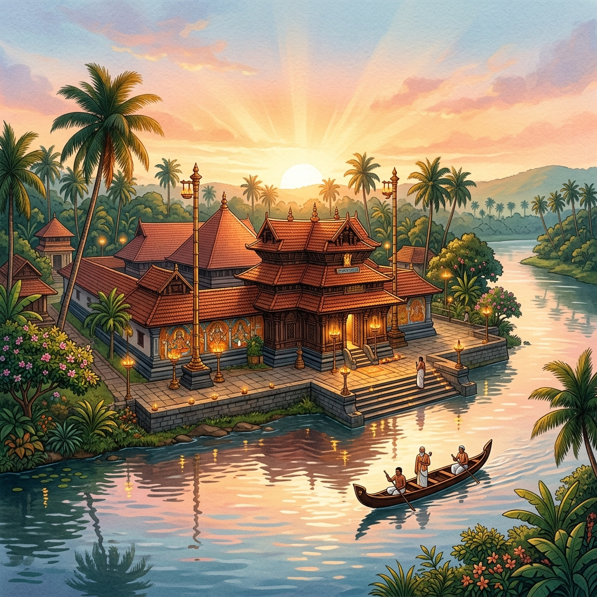

A birthplace.
A sacred landscape.
A living legacy.
Kalady is revered as the birthplace of Jagadguru Sri Adi Shankaracharya — one of the most influential teachers in the history of Indian spiritual thought. But the significance of Kalady extends beyond biography. It is the meeting of place, life, teaching, memory, and living tradition.
The Significance
of the Birthplace
Where a world-changing journey began
Every great journey begins somewhere. For Sri Adi Shankaracharya, that place was Kalady.
The significance of a Janmabhoomi is not merely geographical. It connects a great life to a real landscape — to the place where childhood unfolded, where formative experiences occurred, and where the first steps of an extraordinary journey were taken.
From Kalady, Sri Adi Shankaracharya would go on to travel across Bharata, expound the teachings of the Upanishads, write influential commentaries, and leave a legacy that continues through institutions, texts, teachers, and seekers.
"Before the journeys across Bharata, there was Kalady.
Before the Acharya, there was the child."

The Significance of
the Sacred Landscape
The land, the river, and the memory
Kalady should not be presented only as a coordinate on a map. Its sacred identity is connected to its landscape.
The Poorna River forms an important part of the traditional memory of Sri Adi Shankaracharya's early life. A 2017 discourse recorded by the Sringeri Peetham compared Kalady on the Poorna with Kashi on the Ganga in explaining its sacred significance to pilgrims.
Land
Not merely a backdrop
River
Not merely scenery
Memory
The place carries it
"Some places are remembered because history happened there. Some places remain alive because memory, worship, and tradition continue there."
Kalady is both.
A sacred geography takes shape.
Aryamba
The mother remembered in the story of the Acharya.
The Significance
of Aryamba
A place shaped by the bond between mother and son
Kalady also preserves the memory of Sri Adi Shankaracharya's relationship with his mother, Aryamba.
The traditions associated with his childhood, his departure, his promise to his mother, and his return connect the Janmabhoomi to a deeply human dimension of his life.
The official account of Kalady's rediscovery records the 33rd Jagadguru of Sringeri visiting the ashoka tree at the place traditionally connected with her cremation before the consecration of the Kalady shrines in 1910.
Spiritual
Historical
Emotional
Deeply Personal
"The story of a teacher who travelled across Bharata remains connected to the mother and the home from which he departed."
The Significance
of the Departure
From Kalady to Bharata
Kalady is significant not only because Sri Adi Shankaracharya was born here. It is also the starting point of the journey beyond it.
From the landscape of his childhood, the journey of Sri Adi Shankaracharya extended across Bharata. The child of Kalady became the disciple seeking a Guru. The disciple became the teacher. The teacher became the traveller. The traveller became an Acharya whose philosophical and spiritual legacy continues across centuries.
Explore His Life arrow_forward"Kalady is the first point on that journey."
Origin
Kalady
The sacred birthplace on the Poorna
Renunciation • The Call
Sannyasa — the turn toward truth
The Guru
Govinda Bhagavatpada
At the banks of the Narmada
The Journey Across Bharata
Commentaries, debates, and teaching
Enduring
The Living Legacy
Centuries of Advaita tradition
The Philosophical
Significance
The birthplace of the teacher of Advaita
The significance of Kalady cannot be understood only through biography.
Sri Adi Shankaracharya's enduring legacy is inseparable from Advaita Vedanta — the philosophy of non-duality — and his role in expounding the Upanishadic teaching through commentaries, works, teaching, and institution-building.
The place where his life began therefore carries special significance for all those who study and follow the Advaita tradition. The official Sringeri account describes Kalady as particularly important for those engaged in the pursuit of knowledge.
Enter the Inquiry arrow_forward"The significance of Kalady is not only that a philosopher was born here. It is that an inquiry which continues to shape seekers across centuries began its journey here."
Advaita asks fundamental questions:
Who am I?
What is the Self?
What is ultimately real?
What is the nature of freedom?
The Significance
of Rediscovery
A sacred place remembered again
I • Obscurity
The birthplace had receded from wider public recognition over centuries
II • The Search
The 33rd Jagadguru of Sringeri, with support from the Maharaja of Travancore
III • Identified
Kalady confirmed as the true Janmabhoomi
IV • Consecrated
21 February 1910
Shrines for Sri Adi Shankaracharya and Sri Sharada consecrated
Today
The Janmabhoomi Kshethram
A living centre of pilgrimage, worship, and Vedic learning
For centuries, the memory of Sri Adi Shankaracharya endured. Yet the precise birthplace had receded from wider public recognition.
The rediscovery of Kalady and the establishment of the shrines marked a new chapter in the life of the sacred place. What had remained obscure emerged again as a centre of pilgrimage, worship, remembrance, and learning.
"The birthplace was not created in 1910. Its sacred memory was brought again into public prominence."
The Significance of
the Living Tradition
Not only a place of the past
Kalady is not preserved merely as a monument to a distant past.
The significance of the Janmabhoomi continues through living practice. The official account records the establishment of a Veda Vedanta Pathashala in 1927 and subsequent development of the temple complex. The Peetham also records a five-day Shastra conference at the Janmabhoomi during Shankara Jayanti.
The sacred place remains connected to the tradition that continues to preserve and transmit the teachings associated with Sri Adi Shankaracharya.
"A birthplace becomes a living Kshetram when memory continues through worship, learning, and tradition."
Worship
Pilgrimage
Study
Teaching
Festivals
Guru Parampara
The Whole Significance
in One View
As a Birthplace
Where the earthly journey of Sri Adi Shankaracharya began.
As a Sacred Landscape
A place whose river, land, and traditional memory are inseparable from his early life.
As a Human Story
A place connected to childhood, mother, home, departure, and return.
As the Beginning of a Journey
The first point in a life that would extend across Bharata.
As a Philosophical Landmark
The birthplace of a great exponent of Advaita Vedanta.
As a Rediscovered Kshetram
A sacred birthplace restored to public prominence through the Sringeri tradition.
As a Living Tradition
A continuing centre of worship, pilgrimage, learning, and remembrance.
"Because here, place and philosophy meet.
Biography and sacred memory meet.
The beginning of a life meets the continuation of a tradition."